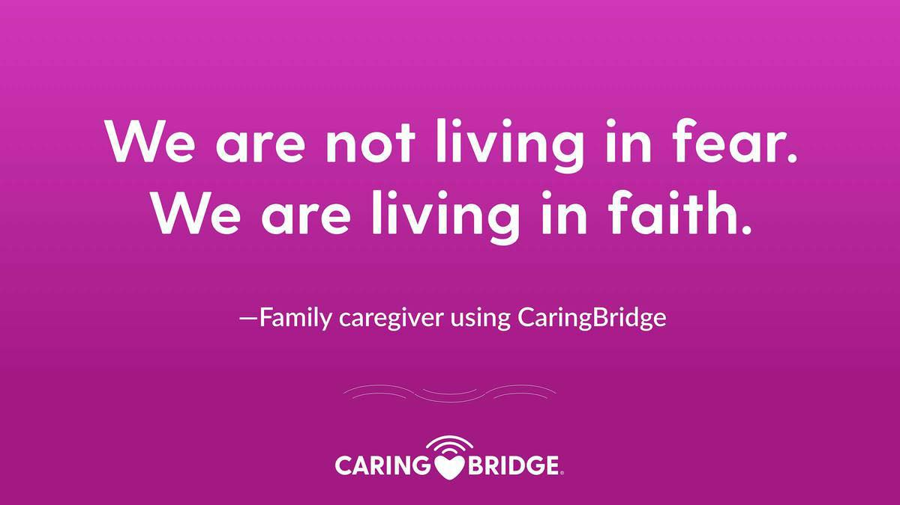
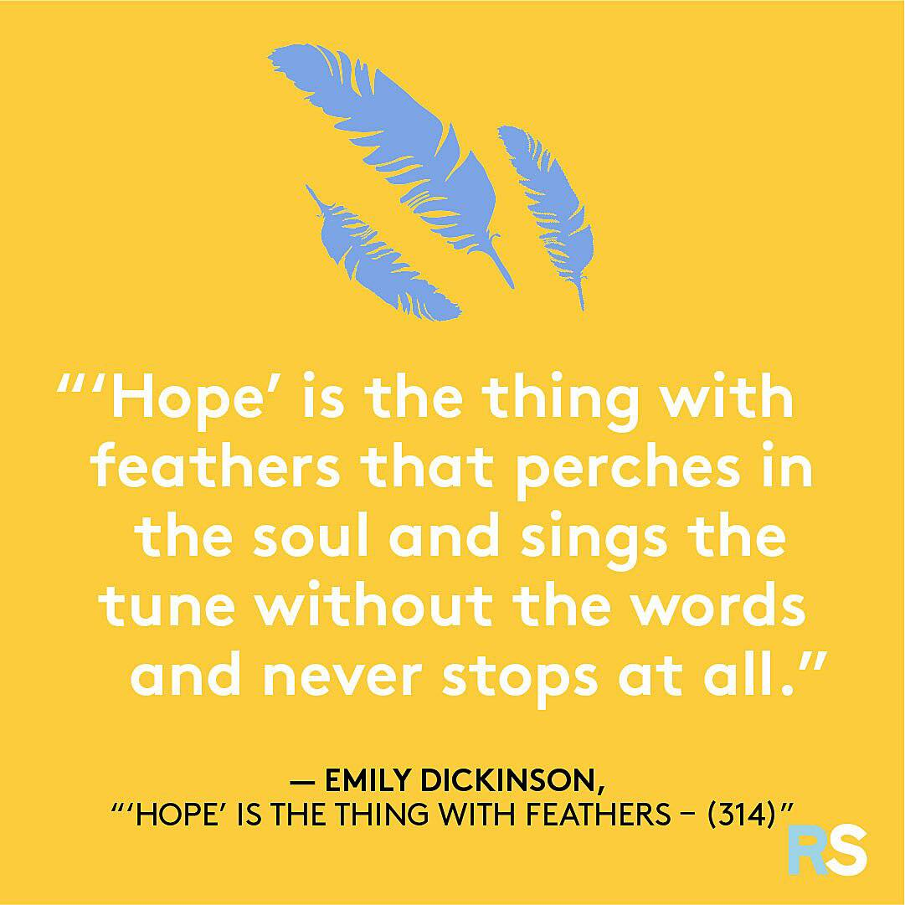

The Moment where we are
LOCKED
in the
DARKNESS
COVID-19 Leads to significant job lose in the Philippines
But
HOPE
will always emerge
How to Respond to the COVID-19 Pandemic with More Creativity and Innovation
Solutions for preventing the next Pandemic
COVID-19: Insights and Solutions